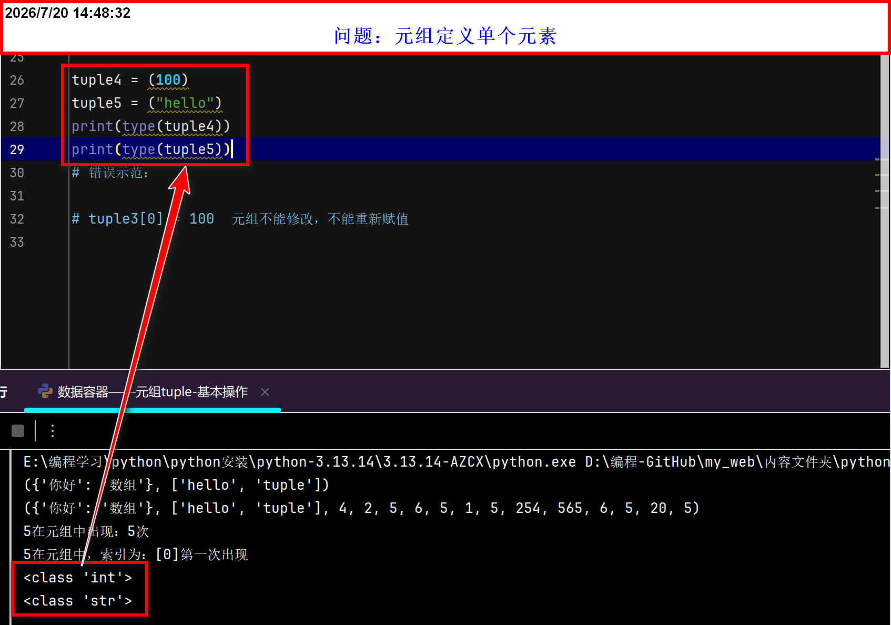
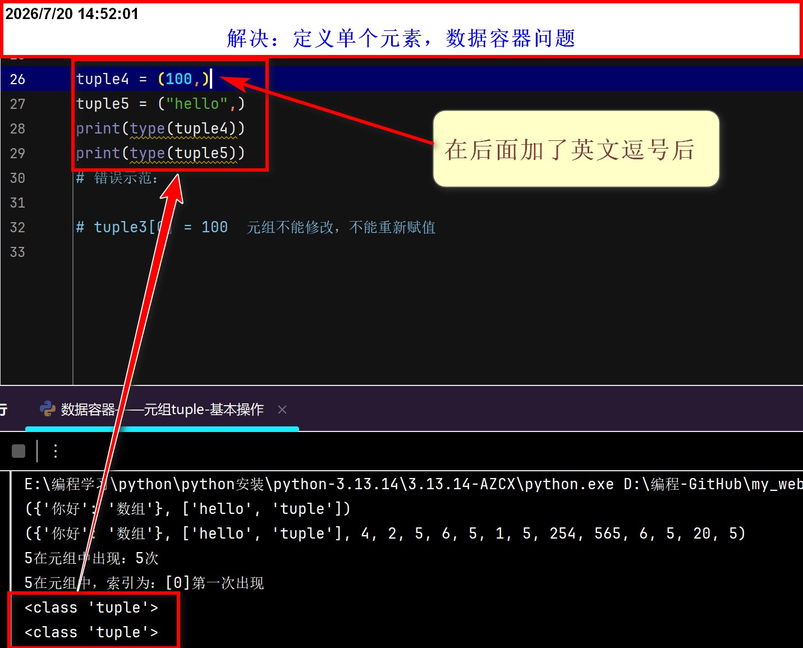

元组tuple-基本操作
元组概念
- 列表特点：元素可重复、有序、可以修改的
- 字符串特点：一个字符串内可以有多个字符，且能重复、有序、不可以修改、只能是字符、不能是其他数据容器
- 元组介绍：元组是不可变的序列，类似于列表、但创建后不能修改
-
元组特点
- 可以存储不同类型的元素
- 元素可以：重复、有序(支持索引访问、切片)、不可以修改
- 定义：列表：
列表名 = [元素1, 元素2, ...]、元组：元组名 = (元素1, 元素2, ...) - 定义空元组：
元组名 = ()，也可以：元组名 = tuple() - 定义空列表：
列表名 = []，但是列表没有：列表名 = list[] - 定义空字符串：
字面量 = ""(不要有空格)，也可以：字面量 = str() - 方法一、
count(slef,value)：统计某元素在元组中出现的次数 - 方法二、
index(self,value)：查找某个元素在元组中的索引位置(第一次出现的位置) - 方法两种形式：
字面量.count(value)/count(字面量,value)
注意事项：
- 当定义元组且只有一个元素：
字面量 = (100)/ 字面量 = ("hello")，这种写法，定义不是元组，而是数据本身的数据类型 - 解决上述问题,只需要在元素后加一个英文逗号即可：
字面量 = (100,)/ 字面量 = ("hello",) -


Python 元组 vs JavaScript 数组（模拟元组）完整对比表 |
||
|---|---|---|
一、概念与定义 |
||
| 维度 | Python 元组 |
JavaScript 数组（模拟元组） |
| 本质 | 内置数据类型 | 内置对象（Array） |
| 定义方式 | t = (1, 2, 3) 或 t = 1, 2, 3 |
let arr = [1, 2, 3] |
| 空元组/空数组 | t = () 或 t = tuple() |
let arr = [] |
| 单元素定义 | t = (1,)（逗号必须） |
let arr = [1]（无需特殊处理） |
| 是否可变 | ❌ 不可变 | ✅ 可变（但可通过 Object.freeze(arr) 模拟不可变） |
| 是否有序 | ✅ 有序 | ✅ 有序 |
| 元素是否可重复 | ✅ 允许重复 | ✅ 允许重复 |
| 是否支持索引 | ✅ 支持（正向和反向） | ✅ 支持（正向，不支持反向负索引） |
| 是否支持切片 | ✅ 支持 | ✅ 支持（slice() 方法） |
| 是否可哈希 | ✅ 是（元素必须可哈希） | ❌ 否 |
| 是否可作为字典键 | ✅ 可以 | ❌ 不可以 |
二、访问与操作 |
||
| 操作 | Python 元组 |
JavaScript 数组 |
| 索引访问 | t[index]（支持负数索引） |
arr[index]（不支持负数索引） |
| 切片 | t[start:end:step] |
arr.slice(start, end) |
| 获取长度 | len(t) |
arr.length |
| 遍历 | for item in t: |
for (let item of arr) {}arr.forEach(item => {}) |
| 同时获取索引和值 | for i, item in enumerate(t): |
arr.forEach((item, i) => {}) |
| 检查元素是否存在 | x in t |
arr.includes(x) 或 arr.indexOf(x) !== -1 |
三、增删改操作 |
||
| 操作 | Python 元组 |
JavaScript 数组 |
| 增 | ❌ 不支持（不可变） | push()、unshift()、splice() |
| 删 | ❌ 不支持（不可变） | pop()、shift()、splice() |
| 改 | ❌ 不支持（不可变） | arr[index] = newValue |
| 连接/合并 | t1 + t2（返回新元组） |
arr1.concat(arr2) 或 [...arr1, ...arr2] |
| 重复 | t * n（返回新元组） |
无原生方法（需用循环或 Array.from()） |
四、解包 |
||
| 操作 | Python 元组 |
JavaScript 数组 |
| 基础解包 | a, b = (1, 2) |
[a, b] = [1, 2] |
| 收集剩余元素 | first, *rest = (1, 2, 3, 4) |
[first, ...rest] = [1, 2, 3, 4] |
| 展开合并 | (*t1, *t2) |
[...arr1, ...arr2] |
| 交换变量 | a, b = b, a |
[a, b] = [b, a] |
五、转换 |
||
| 操作 | Python 元组 |
JavaScript 数组 |
| 转列表/数组 | list(t) |
已经是数组 |
| 从列表/数组创建 | tuple([1, 2, 3]) |
已经是数组 |
| 转字符串（拼接） | ','.join(t)（元素需为字符串） |
arr.join(',') |
六、方法存在性对比 |
||
| 方法 | Python 元组 |
JavaScript 数组 |
count() |
✅ | ❌（可用 filter().length） |
index() / indexOf() |
✅ index() |
✅ indexOf() |
len() / length |
✅ len() |
✅ length |
push() / append() |
❌ | ✅ push() |
pop() |
❌ | ✅ |
slice() |
✅ 切片语法 t[start:end] |
✅ slice() |
concat() / + |
✅ t1 + t2 |
✅ concat() |
reverse() |
✅ 切片反转 t[::-1] |
✅ reverse() |
includes() / in |
✅ in |
✅ includes() |
总结 |
||
| Python 元组：不可变、有序、可哈希，适合作为字典键或集合元素，支持负索引和切片，常用作“只读列表”。 | ||
JavaScript 数组（模拟元组）：可变、有序，可通过
Object.freeze() 模拟不可变，但不具备可哈希性，无法作为对象键。功能更灵活，但缺少元组的“不可变性保障”。
|
||